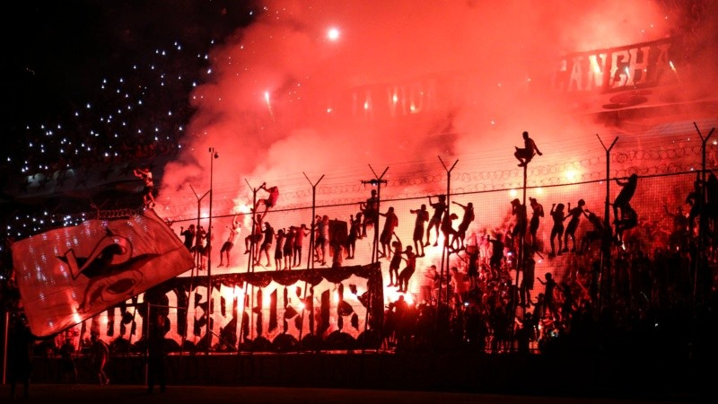

El Newell’s Old Boys fue fundado el 3 de noviembre de 1903por Claudio Newell hijo de un inmigrante inglés, Isaac Newell, quien llegó a Argentino en 1853 y fundó en 1884 el Colegio Comercial Anglicano Argentino al cual trajo el primer balón de cuero y el primer reglamento oficial de fútbol procedente de Inglaterra. Claudio en compañía de profesores, alumnos, y ex alumnos del colegio, celebró el acta de conformación del club que llevaría por nombre Club Atlético Newell's Old Boys en homenaje a la entrega de su padre al colegio y a su pasión por este deporte. Los colores del equipo se dieron por inspiración de la bandera de Inglaterra, patria de Isaac, y la de Alemania, patria de su esposa Ana, tomándose el rojo y negro respectivamente. Tras el inicio de sus funciones, a inicios del siglo XX, el equipo fue invitado a participar en un encuentro a beneficio de los enfermos de lepra del Hospital Carrasco, a lo que accedieron inmediatamente, mientras que su rival, Rosario Central se negaba, motivo por el cual los Newell’s adquirieron el apodo de los Leprosos y los rosarinos el de Canallas.
A finales de marzo de 1905, se creó la Liga Rosarina de Fútbol, siendo el primer torneo oficial la Copa Santiago Pinasco que dio inicio el 21 de mayo y tuvo como ganador a Newell's por dos años consecutivos. Al año siguiente al bicampeonato, en 1907, la Liga Rosarina amplia los campeonatos incorporando una segunda división que tomó la anterior denominación, Copa Santiago Pinasco, mientras la primera sería conocida como Copa Nicasio Vila, en honor entonces Intendente de la ciudad. Esta nueva edición dio como campeón a los Leprosos en ocho oportunidades, entre 1907 y 1930. Mientras Newells hacía historia en la liga local, muchos equipos bonaerenses conformaron la Asociación Argentina de Fútbol, que junto a la Liga Rosarina organizaron distintos torneos para enfrentar a sus clubes. Ya en 1931, con el paso del amateurismo al profesionalismo, Rosario conforma la renovada Asociación Rosarina de Fútbol y se inician los primeros campeonatos profesionales, como el campeonato rosarino de Primera División que tenía el nombre de Torneo Gobernador Luciano Molinas, simultáneamente, la Copa Santiago Pinasco seguía como el campeonato de Segunda. Este año Newell's se coronó campeón de esta primera edición, triunfo que repetiría entre 1931 y 1938.
